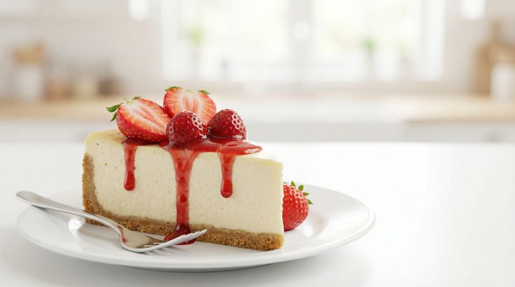
Cheesecake com calda de morango
Aprenda a preparar a sobremesa americana mais famosa do mundo com textura perfeita e sem rachaduras. Esta receita combina uma crosta dourada de biscoito com um recheio leve e cremoso, coberto por uma redução fresca de morango. Fácil de fazer e ideal para impressionar em qualquer ocasião.
Tempo: 1h15min
Rendimento: 1 Porção
Dificuldade: Fácil
Ingredientes
Para a massa de biscoito:
-
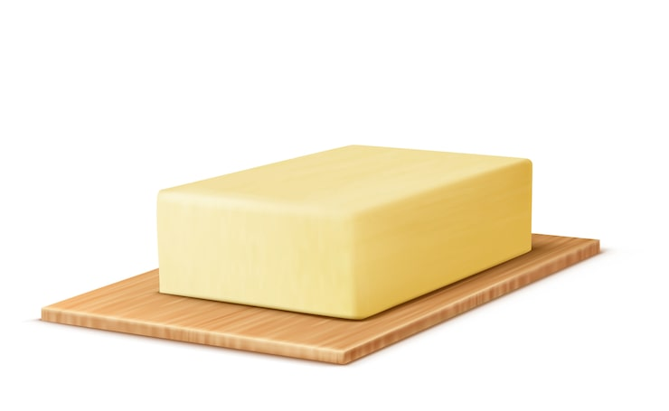
100g de manteiga sem sal -
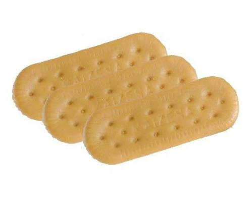
200g de biscoito de maisena
Para o recheio:
-
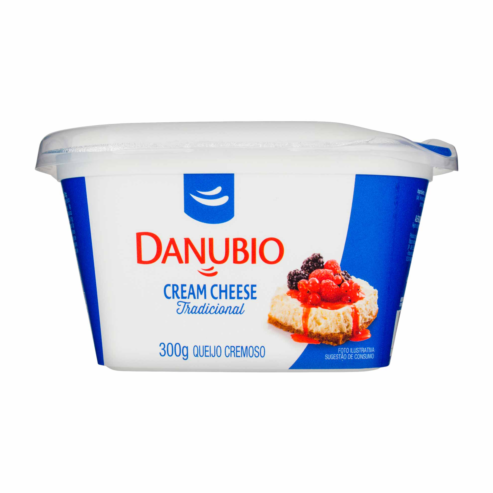
1 kg de ricota sem sal ou cream cheese -
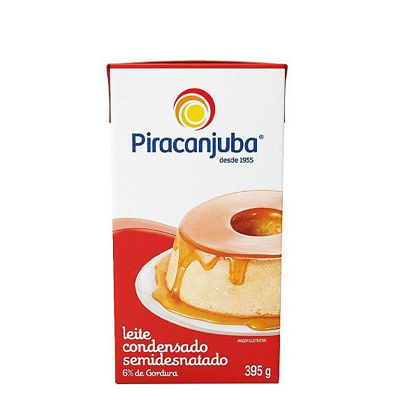
395 g de leite condensado -
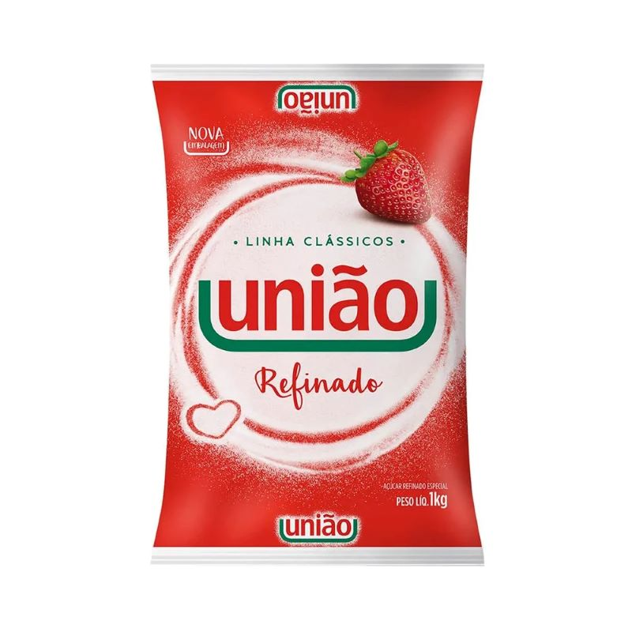
60 g de açúcar refinado -
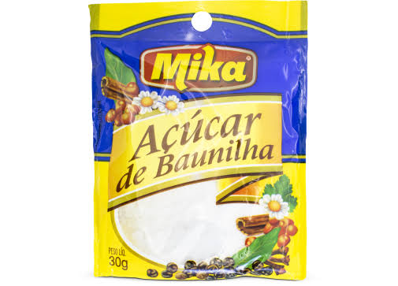
4 g de açúcar de baunilha -
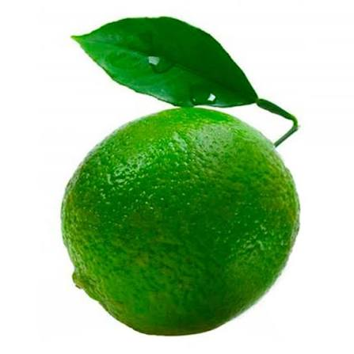
Raspa da casca de 2 limões -
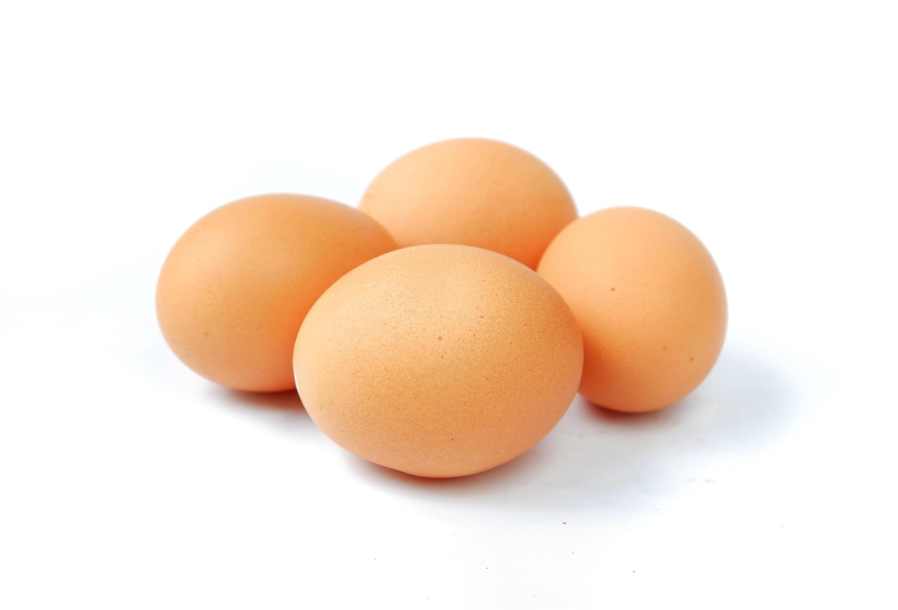
4 ovos levemente batidos
Cobertura:
-
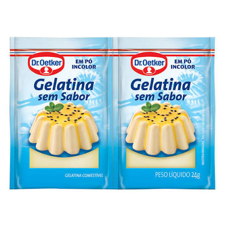
10 g de gelatina sem sabor - 60 ml de água
-
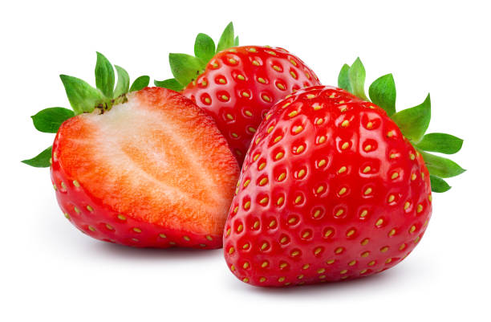
400 g de morango - 100 g de açúcar refinado
Modo de Preparo
Para preparar a massa do cheesecake, triture os biscoitos e misture-os com a manteiga até formar uma farofa úmida, forrando com ela o fundo de uma forma redonda desmontável (de 25 cm de diâmetro por 6 cm de altura) e levando ao forno pré-aquecido a 150°C por 5 minutos antes de reservar.
Em seguida, prepare o recheio triturando no processador a ricota, o açúcar refinado, o leite condensado e o açúcar de baunilha, misturando depois as raspas de limão e os ovos; despeje esse creme sobre a massa na forma e asse a 165°C por 15 a 20 minutos, até que as laterais fiquem firmes e o centro cremoso.
Para a cobertura, hidrate a gelatina sem sabor na água e reserve, enquanto tritura os morangos e os leva para ferver com o açúcar refinado; após retirar do fogo, passe a calda por uma peneira, adicione a gelatina derretida e aguarde esfriar.
Por fim, espere o cheesecake esfriar completamente para desenformá-lo, espalhe a geleia por cima e conserve-o na geladeira (entre 5°C e 8°C) por até 5 dias.